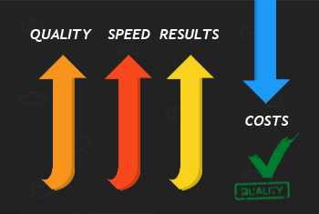

Virtual Call Center A Revolutionary Way of Interacting With Customers
 What is the difference of a Virtual Call Center from a traditional Call Center?
What is the difference of a Virtual Call Center from a traditional Call Center?
A Call Center is usually a physical space where customer calls are routed and handled by an organization, which is capable of answering a certain number of calls at a time. A call center usually deploys a certain degree of automation in how calls are received, routed and handled. A Virtual Call Center is a contact center where most employees, representatives and agents may not be located in one area, some of them may even work in their homes. The difference primarily is its capability of proving more flexibility to the business and to its employees.
Virtual Call Centers mostly have representatives that are spread out geographically, which means they do not necessarily have to stay in one center. This provides a very practical approach of handling customer service needs for a company, and an attractive arrangement for agents. For companies, this model literally saves housing and equipment cost, and can also bring lower employee turnover. Of course, a Virtual Call Center also offers more benefits.
Market Overview
The 21st century has welcomed several new vertical markets and global communities with connectivity playing a very critical part of this. Small to Medium-sized Businesses (SMB) with a good foundation in terms of connectivity can slingshot their business into the top and right at the center of the public eye. Thus, most SMBs are making the big switch from employing traditional call centers to virtual call centers in handling customer interaction.
Voice over IP (VoIP) has opened the Virtual Call Center Market that has continued to revolve around SMBs. Virtual Call Centers have accounted for 75% of the market shares in 2010, and continues to leverage various multi-channel solutions to small to medium-sized businesses. Whereas, cloud computing holds a $40.7 billion market in the US alone. Cloud-based services are expected to explode and grow exponentially in 2020 at a forecast of 241 Billion. Meanwhile, the Virtual Call Center market is expected to follow the same trend and will become the next platform preference for customer interaction.
General Benefits of Virtual Call Center
Primarily, companies choose or switch to Virtual Call Center because of the benefits the system offers which are the following:

- Cost Reduction - Virtual Call Centers are relatively inexpensive, as opposed to the traditional call center setup because there is no need for a physical center, therefore eliminating infrastructure cost. Virtual Call Centers use soft-phones and specially customized software that eradicates the need for desk phones. It is also very easy to deploy and eliminates high cost and expenses brought by long distance calls.
- Greater Agent Selection Pool – Since employees do not need be confined in a single office space or geographical location, employers have a bigger pool of prospect employees to choose from. The company's recruitment team will not be restricted to a specific area only and can expand the search without extra cost.
- Increased Employee Retention – Recruitment and training can be costly. However, with Virtual Call Centers, employees opt to stay with their jobs because of the flexibility that comes with it. Agents can work in the comforts of their homes and may have an option of working on their desired schedule, which can make happier employees and increase retention.
- Flexible Business Solutions - Call volumes may vary significantly depending on the time of the year, seasons or other factors. Having a traditional call center means having to maintain seats and infrastructure set-up the whole year-round, which is very costly. With Virtual Call Centers, your business can have the flexibility of scaling up or down, depending on customer needs and demands. You can adjust volumes as it increases or decreases.
- 5. Excellent Return-on-Investment - Our Virtual Call Center Solutions offer companies the capacity to switch from inbound to outbound calls easily, even integrate multiple call types creating multi-skilled employees. This can heighten productivity and drive profitability.
What Do We Offer
Datelo offers a Virtual Call Center that is easy, fast, and affordable. Plus it is cloud-based! Our technology makes it easy to link multiple work sites through one unified calling system without expensive equipment or complicated software. We can take your business to the next level by routing incoming calls to a several virtual call centers, letting our technology do the work for you.
Key Features

- Access phone systems 24/7 through web-based apps
- Music and Messages on Hold
- Automated Receptionist
- Create Multiple Extensions
- Route Calls to Multiple Phones
- Dial by Name Directory
- Unified Messaging for Multiple Locations
- One Bill for Multiple Lines and Accounts
- Instant Call Notifications
The Datelo Advantage
There are several Virtual Call Center services available in the market. And knowing what is best for your business is key. Let us show you what sets Datelo apart from the rest.
- Automatic Call Routing: It is very simple to deploy calls to the right extensions with Datelo's Virtual Call Center, without requiring customers to call back a different number! Switching and routing calls are easy. The automated telephone attendant will connect customers to the appropriate department extension based on the options selected.
- Intelligent Caller Information: When agents answer incoming calls, Datelo's Virtual Call Center can automatically provide them with intelligent customer information such as customer validation details, purchase and interaction history. This ensures the quality of customer service across all extensions and optimize customer experience.
- Intelligent IVR System: Datelo understands customer's short tolerance in staying on the line to wait for the next customer service representative. With our Virtual Call Center, you can reduce the number of frustrated customers and retain callers by setting up customized messages. You can play announcements about new products, answer FAQs, provide directions to nearby business locations or give website addresses where customers can get more information about products, services, even support. You can also setup priority queues and ensure that important calls get in line first.
- Automated Helpdesk: Datelo aims to always provide you with the best solutions in the market. With automated helpdesk setup for your Virtual Call Center, you are providing customers the perfect solution without having to wait on the line. This is best used for setting up troubleshooting guides for common issues and will dramatically reduce unnecessary volume that can possibly clog up your queues. This feature also helps decrease operating costs!
- Speed and Ease of Setup: Our system is very easy to setup. With the help of our technical specialists who are readily available to design your call center system. Our web-based platform also makes it easy to setup, upgrade, update and make changes in your system.
- Adaptable Options: Our system also makes it easier to expand your business. With Datelo's Virtual Call Center, you can add unlimited number of extensions and have them patched through any number, routed to specific extensions in the office or at home, on the road or while you are on the go. Datelo helps in realizing your company's potential growth. At the same time, we understand the ever changing customer demands and provide you a flexible option when there may be a need to scale down a bit.
- Accessibility: This is key in every business solution, thus our web-based management platform is accessible anytime, anywhere, and designed particularly for business leaders and clients who are always on the go, bringing your system and managing it all in the cloud.
- Analytics: As you manage and grow your businesses you may need to access call details such as date, time, caller identification, IVR responses, Transfer information, Talk Time and other historical data. Our system not only provides you access to these data, but helps you create insightful reports as well.
- Right Technical Solution: Having the right partner is very critical to ensure your business success. We at Datelo, make sure that you only get the best solutions for your needs at no extra cost. We provide consultation,trainings and support. We understand that you put your customers first, therefore we make sure we take care of your every need. Datelo is your trusted advisor.
 Learn More About Us
Learn More About Us
Datelo.com, powered by LeadingQuest, acknowledges the demand for cost-effective, revenue generating solutions. Thus, we are here to deliver these solutions to your doorstep. LeadingQuest is a Telecom and Technology company, headquartered in the USA and with subsidiaries in Brazil. To learn more about LeadingQuest's products and services, please visit our website: www.leadingquest.com or www.datelo.com.br/en. You can also email us at sales@datelo.com.br or call us 1-704-448-1158.
 The Customized Global M2M Solution
The Customized Global M2M Solution


 English
English Português
Português